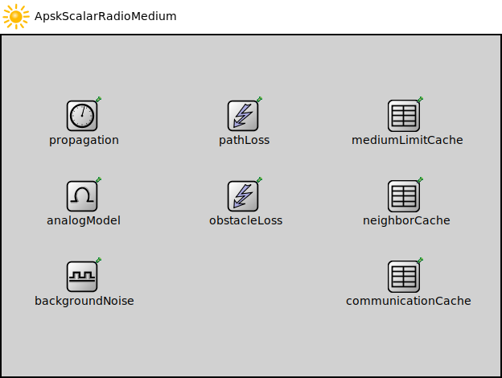

Package: inet.physicallayer.wireless.apsk.packetlevel
ApskScalarRadioMedium
compound moduleThis radio medium model provides a hypothetical radio that simply uses one of the well-known modulations without utilizing other techiques such as forward error correction, interleaving, spreading, etc. It must be used in conjunction with the ~ApskScalarRadio model.
<b>See also:</b> ~ApskScalarRadio, ~ScalarAnalogModel, ~ApskScalarTransmitter, ~ApskScalarReceiver.
Inheritance diagram
The following diagram shows inheritance relationships for this type. Unresolved types are missing from the diagram.
Used in
| Name | Type | Description |
|---|---|---|
| CorruptionModeExample | network | (no description) |
| ManetSensorNetwork | network | (no description) |
| SensorNetworkShowcaseA | network | (no description) |
| SensorNetworkShowcaseB | network | (no description) |
Extends
| Name | Type | Description |
|---|---|---|
| RadioMedium | compound module |
The medium model describes the shared physical medium where communication takes place. It keeps track of radios, noise sources, ongoing transmissions, background noise, and other ongoing noises. The medium computes when, where and how transmissions and noises arrive at receivers. It also efficiently provides the set of interfering transmissions and noises for the receivers. |
Parameters
| Name | Type | Default value | Description |
|---|---|---|---|
| physicalEnvironmentModule | string | "physicalEnvironment" |
module path of the physical environment model |
| signalAnalogRepresentation | string | "scalar" | |
| rangeFilter | string | "" |
filter parameters that control when signals are sent to receiver radios |
| radioModeFilter | bool | false |
when enabled the radio medium doesn't send signals to a radio if it's neither in receiver nor in transceiver mode |
| listeningFilter | bool | false |
when enabled the radio medium doesn't send signals to a radio if it listens on the channel in incompatible mode (e.g. different carrier frequency and bandwidth, different modulation) |
| macAddressFilter | bool | false |
when enabled the radio medium doesn't send signals to a radio if it the destination mac address differs |
| recordTransmissionLog | bool | false |
logging parameters |
| recordReceptionLog | bool | false |
when enabled the medium writes one line per reception into the communication log file |
Properties
| Name | Value | Description |
|---|---|---|
| class | RadioMedium | |
| display | i=misc/sun |
Signals
| Name | Type | Unit |
|---|---|---|
| radioRemoved | ||
| signalDepartureStarted | ||
| radioAdded | ||
| signalArrivalStarted | ||
| signalAdded | ||
| signalDepartureEnded | ||
| signalRemoved | ||
| signalArrivalEnded |
Unassigned submodule parameters
| Name | Type | Default value | Description |
|---|---|---|---|
| neighborCache.refillPeriod | double |
Source code
// // This radio medium model provides a hypothetical radio that simply uses one of // the well-known modulations without utilizing other techiques such as forward // error correction, interleaving, spreading, etc. It must be used in // conjunction with the ~ApskScalarRadio model. // // @see ~ApskScalarRadio, ~ScalarAnalogModel, ~ApskScalarTransmitter, // ~ApskScalarReceiver. // module ApskScalarRadioMedium extends RadioMedium { parameters: analogModel.typename = default("ScalarAnalogModel"); backgroundNoise.typename = default("IsotropicScalarBackgroundNoise"); }File: src/inet/physicallayer/wireless/apsk/packetlevel/ApskScalarRadioMedium.ned
 This documentation is released under the Creative Commons license
This documentation is released under the Creative Commons license